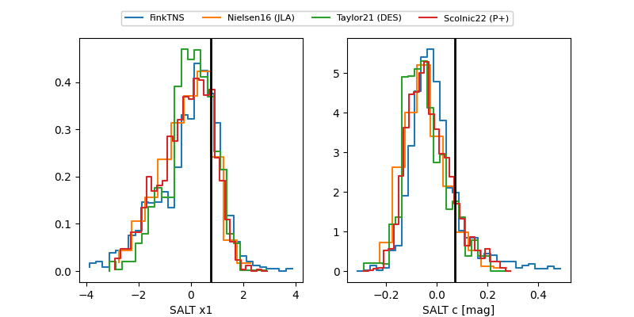

FINK: ZTF25abpansw
Lasair: ZTF25abpansw
ALeRCE: ZTF25abpansw
TNS: 2025xbf
YSE: 2025xbf
ZTF25abpansw (ztf,fink)
2025xbf (tns,yse)
equatorial (ra, dec) = (294.2726,+67.55330)
galactic (l, b) = (99.3401,+20.74395)

last ztfg=20.15, ztfr=19.61
5 ztfg, 5 ztfr detections